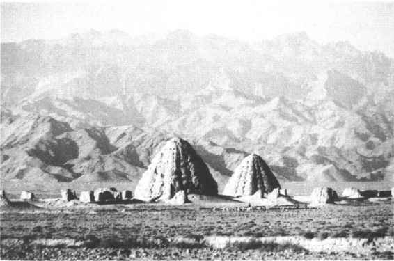
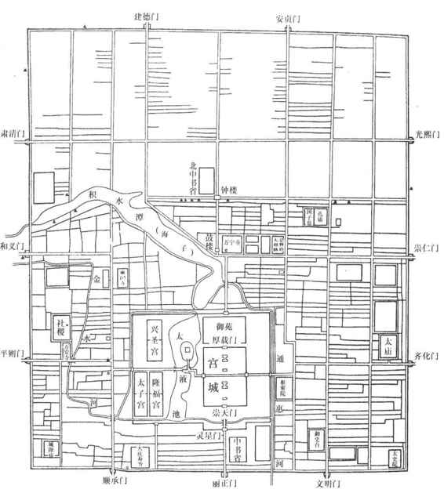
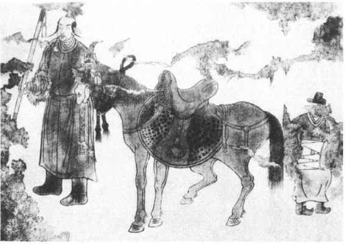
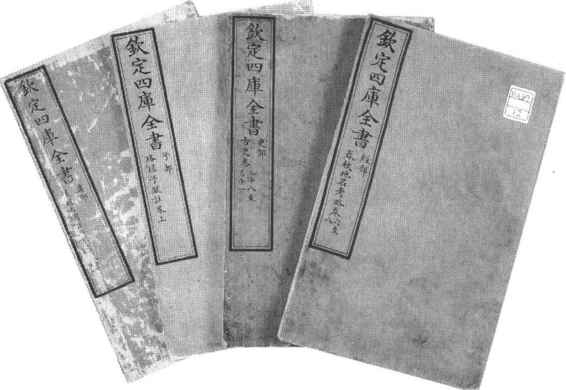

在经历魏晋南北朝的“五胡乱华”、隋唐时期的胡汉文化融合之后，公元10—13世纪，中国历史又进入了一个北方民族活动的高峰期。此间契丹人、党项人、女真人、蒙古人先后建立了辽、夏（史称西夏）、金、元四个强大的民族政权。公元17世纪，东北地区的女真人后裔形成满族，他们建立的满清王朝为中国历史上大规模的民族融合画上了圆满的句号。辽、西夏、金、元、清这些北方民族建立的王朝，与历史上匈奴、突厥、回鹘建立的草原游牧民族政权具有很大的不同，他们都是仿照汉族王朝的模式而建立，拥有国号、年号、汉式政权机构和相关的礼仪制度。其统治范围，已不再局限于民族原居住地，而是不同程度地拓展到汉族社会。辽、西夏控制了部分北方和西北的农耕地区；金则入主中原，与南宋形成对峙；元更是混一南北，成为中国历史上第一个北方民族建立的统一王朝；清代，中国的疆域得到进一步的拓展和巩固，北方民族融合达到高峰。在民族融合的广阔背景之下，异质文化之间的冲突、交流、融汇陆续发生，其中北方民族的汉化依然是主流倾向，汉文化的核心地位更加强化。
北方民族均是华夏民族夷狄遇之的所谓野蛮民族。据文献所称，契丹是鲜卑宇文部之后，源流出于古老的东胡。唐初，契丹八部组成部落联盟，联盟长称可汗，受唐赐姓为李。唐代中期起，联盟内耶律氏家族势力不断壮大。至10世纪初，耶律阿保机遂取代可汗之职，并于916年称帝建立契丹国。其次子耶律德光在位期间，利用中原的混乱局势，帮助军阀石敬瑭取代后唐建立后晋政权，因而得到长城以南、包括今天北京和河北、山西北部的燕云十六州作为酬劳。947年，德光出兵灭掉后晋，进入汴京，模仿汉王朝礼仪接受百官朝贺，正式定国号为辽。由于在中原难以立足，很快撤回北方。北宋建立后，辽、宋之间互有攻守。1004年，辽、宋在澶州（今河南濮阳）订立“澶渊之盟”，双方约为兄弟，各守疆界。宋每年向辽支付“岁币”银10万两，绢20万匹。此后双方基本相安无事，直至1125年，辽被新崛起的金所灭。其部分残余势力在皇族耶律大石的率领下至西域重新建国，史称西辽，1218年亡于蒙古。
党项出自古代的羌人，原居住于四川西北、青海东部，部族众多，互不统属，而以拓跋氏实力最强。唐代前期，党项因吐蕃逼迫，臣服于唐，内迁甘、陕一带。唐代末年，党项首领拓跋思恭协助平定黄巢有功，授夏州节度使，封夏国公，并赐姓李。五代直至宋代初年，党项始终保持藩镇地位，具有相对的独立性。宋真宗时，党项首领德明先后受封为西平王、夏王，他击败吐蕃及甘州回鹘，基本控制了河西走廊。德明之子元昊具有较强的民族意识，继承王位后宣布放弃唐宋王朝赐姓，改回本家族姓氏，并下达“秃发令”，恢复民族旧俗。元昊于1038年称帝，国号大夏，建都兴庆府（今宁夏银川），史称西夏。（图1—11）西夏的疆域东临黄河，西尽玉门关（今甘肃敦煌西），南抵萧关（今甘肃环县北），北连大漠。夏、宋之间于是进入军事对峙状态。1044年双方达成和议，宋册封元昊为“夏国主”，元昊对宋称臣，作为回报，宋每年给予西夏“岁赐”绢15万匹、银7万两，茶3万斤。金灭北宋后，西夏称臣于金。1127年，西夏为蒙古所灭。

图1-11 西夏王陵
女真是唐朝黑水靺鞨的后裔，其族源可追溯至上古的肃慎。主要活动范围在黑龙江、松花江流域，因臣属于辽，一部分人被迁至辽东，编入户籍，称为“熟女真”。没有迁徙者，社会形态相对落后，称为“生女真”。辽代后期，完颜部逐渐统一了生女真各部，首领完颜阿骨打于1115年正式称帝，建国号金，定都上京（今黑龙江阿城南）。1125年，金灭辽，1127年，灭北宋。1141年，金与南宋签订“绍兴和议”，双方以东起淮水中流、西至大散关（今陕西宝鸡西南）一线划界。南宋称臣于金，每年缴纳“岁贡”银25万两，绢25万匹。金第四任皇帝海陵王完颜亮在位时，迁都至燕京（今北京），改名中都大兴府。13世纪初，蒙古崛起于漠北草原，南下攻金。金被迫放弃中都，迁都至北宋旧都汴京，扼守河南、陕西的狭窄地区，苟延残喘。1234年，金为蒙古和南宋联军所灭。
蒙古族来源于唐朝的室韦，最初活动于大兴安岭北段，唐末西迁进入漠北草原，部族繁盛。1206年，蒙古部首领铁木真统一漠北，建立大蒙古国，草原贵族尊其为成吉思汗。此后，蒙古铁骑东征西讨，不仅征服了金与西夏，还将势力拓展至中亚、西亚乃至东欧地区，建立起横跨欧亚大陆的世界性帝国。1260年，成吉思汗的孙子忽必烈即大汗之位，蒙古的统治中心自漠北移入汉地，兴建都城于燕京，定名大都。（图1—12）同时推行“汉法”，建立起汉式官僚机构和礼仪制度。1271年，取《易经》“大哉乾元”之义，正式定国号为大元。统治中亚、西亚、东欧的成吉思汗后裔则形成了相对独立的四大汗国——钦察汗国、伊儿汗国、察合台汗国和窝阔台汗国，元朝对他们仍然保持名义上的宗主关系。1276年，元灭南宋，结束了持续数百年的政权并立，重新确立了大一统的格局。1368年，在农民起义中建立的汉族王朝大明推翻了大元，中央政权又回归汉族统治。

图1-12 元大都城复原平面图
金被元灭亡之后，女真人散布在东北诸地。元代时居住在辽阳等路的女真人，因长期与汉族杂居，从事农业，逐渐趋于汉化。而分布在松花江流域和黑龙江中下游的女真人，则是“无市井城郭，逐水草为居，以射猎为业”［15］。明代初年，这部分女真人逐渐向南迁徙，并形成了建州女真、海西女真和东海女真三大部落。三大部女真社会经济发展水平很不平衡，相互之间为了争夺全族的统治权而不断进行兼并战争，公元17世纪上半叶，建州女真在努尔哈赤的率领下最后完成了对女真各部的统一。努尔哈赤打破原有的氏族血缘关系，创立政治、经济、军事合一的八旗制度，统辖所有女真人，并致力于语言文化的统一。女真各部的统一，为新的民族共同体——满族的形成奠定了基础。公元1616年，努尔哈赤建立了后金政权。公元1635年，皇太极废黜女真旧号，定族名为“满洲”。次年皇太极即皇帝位，改国号为“大清”。公元1644年，明王朝灭亡，清迁都北京，建立了中国历史上最后一个统一的封建王朝。清代是中国统一多民族国家空前巩固和发展的时期，其疆域“东极三姓所属库页岛，西极新疆疏勒至于葱岭，北极外兴安岭，南极广东琼州之崖山”［16］，基本奠定了近、现代中国的版图。清王朝的建立和国土的空前统一，为均已形成单一稳定的民族共同体的中国各个民族创造了政治、经济和文化的联系与交流的极好平台。
北方民族的文明主体属于草原游牧文明，无论是生产还是生活方式，都与中原汉族农业文明存在巨大的差异，因为他们所代表的是两种异质文化，所以在相互接触的过程中，必然发生激烈的碰撞。契丹、党项、女真、蒙古和满洲诸族建立政权并向中原推进，其间往往伴随着大规模的烧杀抢掠，极大地冲击了汉族农业文明。（图1—13）金灭北宋的战火，即导致户口骤降。直至金世宗大定（1161—1188）初年，北方户数仅恢复到三百余万，不及此前北宋北方和辽朝统治区户数总和的一半。蒙古军的破坏则更为惨烈，他们每攻一城，必先劫掠附近的集镇村落，驱赶百姓充当炮灰，死伤不计其数。而一旦遇到抵抗，城破之日就是屠城之时，杀戮的残酷程度，罕见其匹。许多蒙古贵族不知道如何统治管理新占农耕地区，以至有人提出“虽得汉人，亦无所用，不若尽去之，使草木畅茂，以为牧地”，幸得耶律楚材竭力阻止，才没有付诸实施。［17］杀戮之外，蒙古贵族、军阀还趁乱隐占大量人口，也直接造成北方户口数字的骤降。清兵入关之后，平定四方的过程同样伴随着杀戮，富庶的江南地区因为强力抵抗，遭受的杀戮尤为惨烈，“扬州十日”，“嘉定三屠”，无不昭示着尖锐的民族矛盾冲突。清代初年还借口无主荒田甚多，大肆圈占京畿地区汉族农民的田地，分给“东来诸王、勋臣、兵丁人等”［18］。自顺治元年（1644）至1669年康熙亲政下令停止圈地，其间先后进行了三次大规模的圈地，总共圈占田地16838顷之多。圈地运动无疑给发展比较成熟的汉族农业文明造成了巨大的破坏。

图1-13 内蒙古昭乌达盟白塔子辽墓壁画契丹人引马图
北方民族的统治在某种程度上还把奴隶制因素注入汉地，致使社会经济领域中出现了人身依附关系强化的倒退趋势。女真、蒙古社会中都有役使奴婢的传统，进入中原后，通过战争俘虏、罪犯家属籍没和人口贩卖等方式，大量掠夺人口，作为奴婢。据金世宗大定二十三年（1183）的统计数字，女真贵族、平民拥有的奴婢总人数将近140万。奴婢在金、元又称为“驱口”，子孙相袭，没有人身自由。元朝法律规定，驱口是主人财产的组成部分，可以任意转卖。元朝的统治还带有很强的民族歧视与压迫色彩，统治者按照被征服的先后将治下百姓分为蒙古、色目、汉人和南人四等，地位依次降低。在户籍管理方面，则依据职业、信仰等因素将全体居民分为若干种，称诸色户计。其中承担特殊行当的“户计”，都是父子兄弟世代相传，不得随便脱籍，表现出更强的人身依附关系。清代的大规模圈地，导致京畿地区汉族农民变成“无田无家”的流民，清廷强迫他们“投充”，即依附于满族地主。而满族地主对于投充人的人身及其财产，都可以随意处置，实际使投充人丧失了平民身份，变成世袭的奴隶。习惯于自耕农生活的汉族农民对此自然强烈反抗，纷纷逃亡，清廷于是制定严厉的“逃人法”，缉捕逃人，形成严重的民族矛盾。
在北方民族南进的浪潮中，中华传统文化遭受极大冲击。战火所及，经籍散亡，学校隳废，儒士颠沛流离，困窘不堪。蒙古入主中原之后，很长时间里满足于“马上治天下”，“视学校为不急，谓诗书为无用”。［19］士大夫无以为生，“混于杂役，堕于屠沽，去为黄冠”［20］，甚至沦为驱口，处境十分悲惨。北方民族建立的政权，其官僚体系基本是本民族旧制与汉制的复合产物，如辽朝即实行南、北面官制度，“（北面）以国制治契丹，（南面）以汉制待汉人”［21］。在官员的选择方面，贵族世袭政治色彩明显，唐宋发展完善的科举制度反而降为从属。元代选官首重怯薛（皇帝的宿卫亲军）近侍，其次为刀笔胥吏，儒士反而出路狭窄，仕进无门。延至清代前期，满洲贵族仍然牢牢控制着重要的职位，在行政管理上，尽管使用汉人，但是并不赋予实权。汉族士人社会地位的低落，实际是儒家文化受到轻视的反映。在北方民族的观念中，儒教思想相对陌生，他们更为熟悉的是萨满之类本民族原始宗教信仰，以及外来的佛教、喇嘛教信仰。元朝建立后，最高统治阶层尊奉吐蕃僧侣为帝师，甚至亲自受戒皈依喇嘛教，并在地方广设帝师殿，供奉第一任帝师八思巴，其规模制度超出孔庙。清代早期，喇嘛教还是十分盛行，在满洲皇室和贵族阶层获得广泛的崇奉，但不再具有国教的地位。
清朝定鼎中原之后，面对人口占据绝对多数且文化深厚的古老帝国，自然产生出本能的文化恐惧。为此，清廷提出“崇尚满洲”的治国原则，并通过屡兴文字狱、禁毁书籍的方式消弭汉族士人的民族意识和文化认同。有清一代，文献记录的文字狱多达一百六十余起［22］，主要集中在康、雍、乾三朝，而案由多是涉及眷念前朝、否定清廷正统地位。康熙朝的第一大案是庄廷珑《明史》案，庄氏为湖州富户，有志著史传世，购得明末朱国祯《皇明史概》残稿，请人加工补写，以为己作。因书中多有清廷忌讳的“违碍”词句，被人以“逆书”罪名告发。当时庄氏已死，剖棺戮尸，作序、校补、审稿、出资助刊、刻印及买卖之人均遭株连杀害，死者七十余人。康熙五十年（1711），又发生戴名世《南山集》案。戴氏为翰林院编修，以古文名家，著有《南山集偶抄》，其中引用方孝标《滇黔纪闻》，议论南明史事，并用南明诸帝年号，比为蜀汉，视作正统。结果被参劾“语多狂悖”，戴名世处死，方孝标戮尸。牵连两家家属及刊印、作序之人数百，本来皆议处死，后经康熙帝亲自裁定，从宽戍边。较之庄氏史案，已是足够宽大。雍正朝影响最大的是吕留良案。吕留良主程朱性理之学，尤重华夷之辨，有强烈的反清复明思想。湖南人曾静受其影响，著《知几录》、《知新录》，宣扬华夷之别，表达对清朝的仇恨情绪。雍正六年（1728），曾静派弟子张熙策动川陕总督岳钟琪反清，被岳告发逮捕。吕留良遭剖棺戮尸，其后人及弟子或杀或充军，曾静、张熙师徒却意外地被作为“误信邪说”的从犯，赦而不杀。雍正意图利用曾、张进行宣传，他把经过歪曲的与曾静辩论“华夷之辨”以及自己即位合法性的文字，包括曾静的忏悔作《归仁录》，合编为《大义觉迷录》，颁行天下。乾隆即位以后，迅速将曾、张二人凌迟处死。乾隆朝是清代文字狱最为频繁的时期，而且绝大部分案件都是望文生义、穿凿曲解，加以莫须有之罪。沈德潜《咏黑牡丹》诗有“夺朱非正色，异种也称王”句，乾隆以其暗含影射，下令剖棺锉尸。诗文中“明”、“清”二字的使用，往往遭到深文周纳。徐述夔去世多年后，遗著《一柱楼诗集》因含有“清风不识字，何故乱翻书”、“举杯忽见明天子，且把壶儿抛半边”、“明朝期振奋，一举去清都”之类文字，而遭剖棺锉尸，后代问斩。乾隆朝文字狱还有一个显著特点，文字狱的对象已不仅仅限于士大夫，而且扩展到士农工商各个阶层，几乎成为遍及社会的政治运动。
在行政管理方面，清廷尽管使用汉族官员，但并不赋予实权，且处处揣测提防。理学名家尹嘉铨曾担任大理寺卿，自称“古稀老人”，“为王者师”，乾隆帝认为悖谬狂妄，于是将他处死。为了在民族文化心理上征服汉人，清廷还通过编修传统文献典籍，淡化汉民族意识。乾隆年间编纂《四库全书》，“寓禁于征”，凡是带有“诋毁本朝之语”或民族偏见的野史、诗文及其他著作，分别予以抽毁、全毁和毁版。在编纂过程中，共禁毁书籍3100余种，其数量几与收书量相埒。［23］（图1—14）因此《四库全书》既有保存文献之功，但同时又是空前的文化劫难。鲁迅对此有过评价：“贼、虏、犬羊”是讳的；说金人的淫掠是讳的；“夷狄”当然要讳，但也不许看见“中国”两个字，因为这是和“夷狄”对立的字眼，很容易引起种族思想来的。［24］精神思想的禁锢和文化意识的阉割对汉族知识分子造成极大的伤害，并深刻影响了他们的价值取向。

图1-14 《四库全书》
满族入主中原后，在语言、礼仪、服饰诸传统习俗层面，也采取放弃汉族传统而进行满族化的政策。顺治初年，强迫汉人剃发留辫，服用满式衣冠，规定“遵依者为我国之民，迟疑者同逆命之寇，必置重罪”［25］。此项高压举措自然引起汉人的强烈反应，满洲八旗兵下江南宣布“留发不留头，留头不留发”，嘉定、江阴军民则发出“头可断，发决不可薙”的誓言，并以死抗争。许多士大夫更以“士可杀不可辱”相期，清初王夫之坚守夷夏大防，“不以一时之君臣，废古今夷夏之通义”［26］，甚至主张对非我族类者，“杀之而不为不仁，夺之而不为不义”［27］。王夫之的思想延至清代末年，仍在鼓舞着主张反清复明的志士。